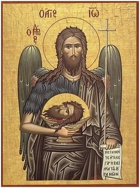
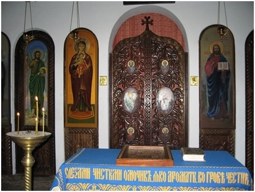
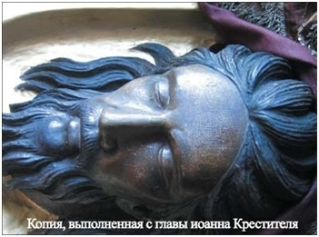
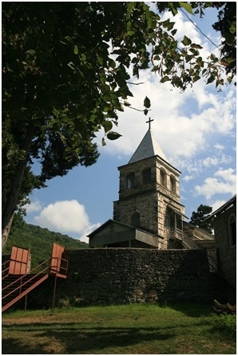
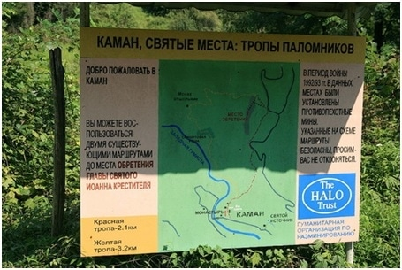
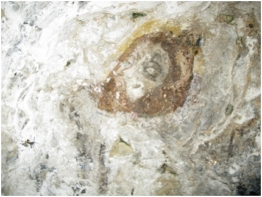
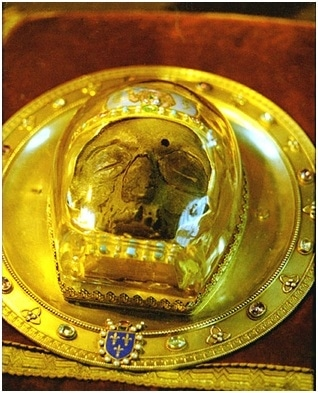

| |

Он родился на шесть месяцев раньше Иисуса Христа. Родителями его были священник Захария и праведная Елисавета, до преклонных лет не имевшие детей. Когда архангел Гавриил предсказал Захарии, что Елисавета родит ему сына, тот усомнился: «Как это может быть? Я стар, и жена моя в преклонных летах»… За такое неверие Захария был поражен немотой. Жена его, как и было предсказано, зачала, но первые пять месяцев таилась. Дева Мария узнала о беременности Елисаветы на шестой месяц от архангела Гавриила и поспешила навестить родственницу. Когда вошла Она в дом Захарии и обратилась к хозяйке с приветствием, то взыграл младенец в утробе жены Захарии и исполнилась она Духа Святого. «И откуда это мне, что пришла Матерь Господа моего ко мне?» — возрадовалась Елисавета. Так сын ее Иоанн, еще не родившись, предсказал рождение Господа от Девы Марии.Родившегося у Елисаветы младенца родственники хотели назвать Захарией в честь отца. «Нет, — не согласилась Елисавета, — надо назвать его Иоанном». «Но ведь нет никого в родстве у тебя с таким именем?» — удивились родственники и стали спрашивать у отца, как бы он хотел назвать сына. «Иоанн», — написал Захария на дощечке имя, возвещенное ему Гавриилом, и тотчас разрешились уста его: он вновь смог говорить, как прежде. И, исполнившись Духа Святого, стал пророчествовать Захария о Мессии и сыне своем, которого нарекут «пророком Всевышнего», ибо предыдет он пред лицом Господа, чтобы «приготовить пути Ему».Когда через шесть месяцев родился Иисус Христос, царь Ирод, сильно встревоженный, послал в Вифлеем и во все пределы его воинов, чтобы избить всех младенцев мужского пола. Вспомнил он и о сыне Захарии, о котором слышал много чудесного. «Может, он и есть будущий царь иудейский?» — подумал Ирод и решил убить и его. Но посланные не нашли в доме Захарии ни Иоанна, ни матери его. Тогда подступили слуги Ирода к самому Захарии, исполнявшему чреду служения в Иерусалимском храме, и стали требовать выдать сына. «Не знаю, где он», — отвечал им Захария. Ирод, сильно разгневавшийся, снова послал к нему сказать, что если он не выдаст сына, то умрет сам. «Вы убьете только тело мое. Душу же мою примет Господь», — отвечал отец Иоанна посланным. И те, исполняя жестокое повеление, бросились на Захарию и убили его.
Елисавета меж тем скрывалась с младенцем в пустыне. Долго искала она места, где бы укрыться, но так и не нашла. И тогда пред высокой горой воскликнула она громким голосом: «Впусти, гора, мать с сыном!» Гора раскрылась и впустила ее, защитив от настигавших убийц. И свет светил ей там с Иоанном, и ангел Господень был вместе с ними, охраняя их. Вблизи образовавшейся пещеры явился источник и выросла финиковая пальма, полная плодов. И всякий раз, когда наступало время для пищи, дерево наклонялось, а когда Елисавета насыщалась плодами, снова выпрямлялось. По одной из легенд, по прошествии пяти месяцев ангел повелел Елисавете начать приучать младенца к акридам и дикому меду. По другой — Елисавета преставилась на сороковой день после убиения Захарии, и с того времени до своего совершеннолетия Иоанн был питаем ангелом...Вышел Иоанн из пустыни, когда достиг совершеннолетия — 30 лет, и начал призывать народ к покаянию, чтобы приготовиться к скорому приходу Мессии. Внешним признаком духовного обновления было совершаемое Иоанном Крещение — омовение от грехов в воде Иордана. Конечно, Крещение это еще не было в полном смысле благодатным. Главный смысл его заключался в духовном приготовлении к будущему Крещению водой и Духом Святым.К каждому из приходящих креститься Иоанн обращался с особенным словом. Саддукеев и фарисеев он укорял за похвальбу, что отец у них Авраам. «Уже и секира лежит при корне дерев, — говорил он таким, — ибо всякое дерево, не приносящее доброго плода, срубают и бросают в огонь». Мытарей предупреждал, чтобы не требовали ничего более определенного им. Воинов учил никого не обижать и довольствоваться жалованьем. И всех приходящих призывал делиться с нуждающимися: «У кого две одежды, тот дай неимущему, и у кого есть пища, делай то же».Будучи аскетом, не пьющим вина и обходящимся грубой одеждой и пищей, Иоанн не требовал того же от других. Осознание людьми, что жизнь, которую они ведут, неправильна и греховна, что спастись от грядущего суда «Того, Кто идет за ним» грешники могут лишь через покаяние — вот, пожалуй, и все, чего он добивался. Но сила его проповеди была такова, что в нем стали видеть пророка Илию, явившегося возвестить о конце света. Некоторые даже приняли его за Мессию, хотя сам он оценивал выпавшую ему роль скромнее. «Я не Христос, и не Илия, и не пророк, я глас вопиющего в пустыне: исправьте путь Господу», — отвечал он присланным из Иерусалима священникам, пожелавшим узнать, кто же он в самом деле.«Что же ты крестишь, если ты ни Христос, ни Илия, ни пророк?» — не отставали священники. — «Я крещу в воде, — разъяснял Иоанн, — но стоит среди вас Некто, Которого вы не знаете. Он-то Идущий за мною, но Который стал впереди меня. Я недостоин развязать ремень у обуви Его»...«Вот Агнец Божий, Который берет на Себя грех мира, — воскликнул Иоанн, когда увидел идущего к нему Иисуса, — я не знал Его; но для того пришел крестить в воде, чтобы Он явлен был Израилю». И, обратившись к подошедшему Господу, Иоанн удивленно спросил: «Мне надобно креститься от Тебя, и Ты ли приходишь ко мне?» — «Надлежит нам исполнить всякую правду», — ответил ему Иисус и принял крещение. И разверзлось тут небо, и Дух Святой сошел на Иисуса, и послышался глас с небес: «Ты Сын Мой Возлюбленный; в Тебе Мое благоволение».Посланный пред Господом, чтобы исправить пути Ему, Иоанн оказался последним в ряду пророков — предвозвестников прихода Мессии, утренней звездой, предвещающей наступление Светлого Дня. Близость его к Христу — предельная, большая — только у Девы Марии. Сам Иисус сказал о нем, что «из рожденных женами не восставал больший Иоанна Крестителя».Жестокий царь Ирод, желавший погубить Иисуса и с этой целью избивший 14 000 младенцев, умер ужасной смертью — был заживо съеден червями. Перед смертью он поделил свои владения между тремя сыновьями — Архелаем, Иродом Антипой и Филиппом. Галилея и Перея (область на восточном берегу реки Иордан) достались Ироду Антипе. Сладострастный и ничем не стеснявшийся, он оставил жену свою, дочь набатейского царя Арефы, ради чужой — Иродиады, отнятой у брата Филиппа, за что и подвергся суровым обличениям Иоанна. Арестовав проповедника, Антипа все же не решился убить его, боясь народа, почитавшего Иоанна пророком.Во время празднования дня рождения Ирода дочь Иродиады Саломея своим танцем так угодила ему, что он клятвенно обещал выполнить любую ее просьбу. «Дай мне голову Иоанна», — поспешила по наущению матери своей попросить Саломея. Опечалился Ирод, но ради клятвы послал палачей в темницу. Принесли оттуда голову Иоанна на блюде и отдали Саломее, а та отнесла ее матери своей. По преданию, Иродиада несколько дней в неистовости протыкала иголками язык пророка, а затем, насытившись глумлением, велела закопать голову в непотребном месте.Похоронив взятое ими тело Иоанна в самарийской Севастии, ученики возвестили о смерти пророка Иисусу. И, услышав о том, Иисус, опечаленный, удалился в пустынное место один...За свершенное злодеяние Ирод получил заслуженное возмездие. В 38 г. его войска были разбиты Арефой, выступившим против Антипы за бесчестье дочери, а в следующем году Ирод с Иродиадой были сосланы римским императором в заточение в Галлию. Предание гласит, что несчастной оказалась и судьба Саломеи. Она переходила зимой реку и провалилась под лед. Голову ее отрезала острая льдина, а тело так и не нашли...

По одному древнему свидетельству, гробница Иоанна Крестителя была в 362 г. разгромлена язычниками, так что из мощей святого сохранились лишь его правая десница (перенесенная апостолом Лукой в Антиохию) и голова, схороненная, как известно, отдельно от тела. В традиции православной церкви существуют предания о трех обретениях главы Иоанна Крестителя. Первое обретение связывают с вельможей Иннокентием, задумавшим построить церковь на Елеонской горе. При копании рва под фундаментом обнаружили кувшин с реликвией. По преданию, это благочестивая служанка Ирода Иоанна выкопала голову пророка из нечистого места (или выкрала у Иродиады) и захоронила в горе.

Второе обретение главы Иоанна произошло в правление императора Константина Великого. Спрятанную Иннокентием главу Иоанна нашли в Иерусалиме два паломника. Они взяли ее с собой, но, проявив леность, отдали нести встретившемуся им горшечнику из сирийского города Емессы. Горшечник оставил неблагочестивых монахов, забрав святыню себе. Перед смертью он поместил главу в водоносный сосуд, запечатал и передал сестре. Позднее сосуд оказался у еретика-арианина, закопавшего его в своей пещере. В 452 г. глава была найдена и перенесена вначале в Емессу, а затем в Константинополь.

Из Константинополя главу Иоанна Крестителя во время иконоборческой ереси перенесли вновь в Емессу, а затем в начале IX в. в Каманы (Абхазия), где спрятали. По преданию, патриарху Игнатию во время ночной молитвы было явлено указание на место нахождения реликвии. Таким оказалось третье обретение главы Иоанна Предтечи.

В начале XIII в. главу Иоанна крестоносцы перенесли во французский Амьен.Вывезенная апостолом Лукой десница Иоанна Предтечи долгое время хранилась в Антиохии, где ее почитали как чудотворную. По легенде, когда в окрестностях Антиохии появился чудовищный змей, требовавший себе в жертву молоденьких девушек, справиться с ним удалось с помощью частички святых мощей Иоанна.В середине IV в. император Юлиан Отступник приказал сжечь святыню, но антиохийские верующие скрыли десницу в городской башне. В царствование императора Константина Багрянородного (X в.) десница Иоанна Крестителя была перенесена в Константинополь.
 Нерукотворный образ Иоанна Крестителя образовавшийся в нише,где хранилась глава Иоанна Крестителя.Село Каманы.Абхазия
Десница Иоанна хранилась в Византии вплоть до ее падения. В 1484 г. правивший Османской империей султан Баязет II в качестве дара передал десницу на о. Родос рыцарскому ордену. После завоевания острова турками ее перевезли на Мальту. Когда в конце XVIII в. император Павел принял предложение мальтийских рыцарей стать главой их Ордена, десница Иоанна Предтечи была привезена в Россию. В 1920 г. она оказалась в Эстонии, потом в Черногории. Когда Черногория была освобождена от немцев, десница в ряду других церковных ценностей оказалась в музее города Подгорице. Затем ее перевезли в Цетинье — древнюю столицу Черногории, где она хранится и по сей день...

|
|
|